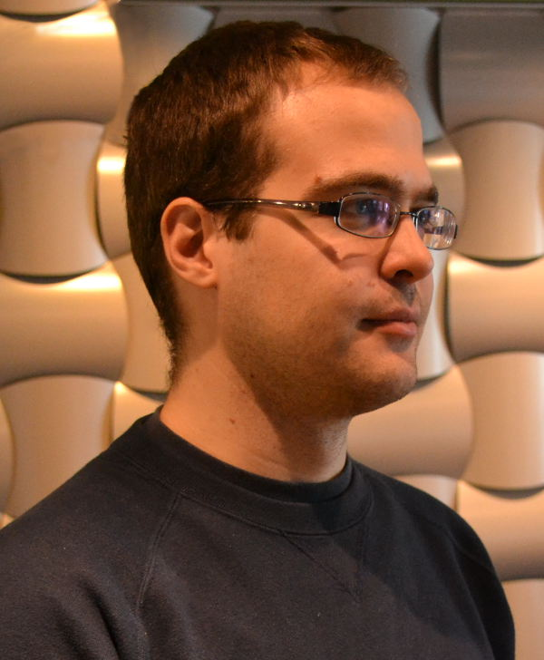

|
 |
| Jun 2014 - now | Music Information Retrieval scientist at Spotify, Berlin, Germany / New York City, NY | |
| Jul 2012 - Jun 2014 | MIR scientist at The Echo Nest (acquired by Spotify), Somerville, MA | |
| Apr 2012 | Ph.D. thesis defense | |
| Sep 2010 - Jun 2011 | Visiting researcher at IRCAM, Paris, France | |
| Jan 2009 - Dec 2011 | Ph.D. student, Dept. of Information Engineering, University of Padova, Italy | |
| Jul 2008 | M.S. in Computer Science (Laurea specialistica in Ingegneria Informatica), University of Padova, Italy | |
| Feb 2005 | Diploma in Piano performance, Conservatory of Venice, Italy |
I recently converted an old reed organ to work as a MIDI keyboard, check it out here (with schematics).
Some code:
Some demos: